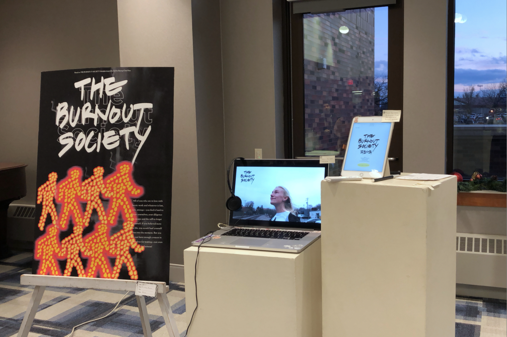

The Burnout Society
UX project (Millikin University Arts Expo 출품작)
2019 Dec
철학가 한병철의 저서 [피로사회The Burnout Society]를 바탕으로 한 프로젝트.
이 프로젝트는 현재 사회에 사는 관람객들이 자신이 번아웃 증후군을 앓고 있는지, 또 어느 정도를 겪고 있는지 간단히 자가진단하도록 한다. 그리고 이를 극복하기 위한 작은 단계들을 제시한다.
A project based on the book of the philosopher Han Byeong-cheol [The Burnout Society].
The project will allow viewers living in society to self-diagnose whether they suffer from burnout syndrome or how much they are experiencing. And it presents small steps to overcome this.

"거친 노동을 좋아하고 빠른 자, 새로운 자, 낯선 자에게 마음이 가는 모든 이들아.
너희는 참을성이 부족하구나.
너희의 부지런함은 자기 자신을 망각하려는 의지이며 도피다.
너희가 삶을 더 믿는다면 순간에 몸을 던지는 일이 줄어들 것이다.
하지만 너희는 내실이 부족해서 기다리지도 못한다 - 심지어 게으름을 부리지도 못하는구나!"
"All of you who are in love with hectic and whatever is fast, new, strange -
you find it hard to bear yourselves, your diligence is escape and the will to forget yourself.
If you believed more in life, you would hurl yourself less into the moment.
But you do not have enough content in yourselves for waiting -
not even for laziness!"



Millikin University Arts Expo